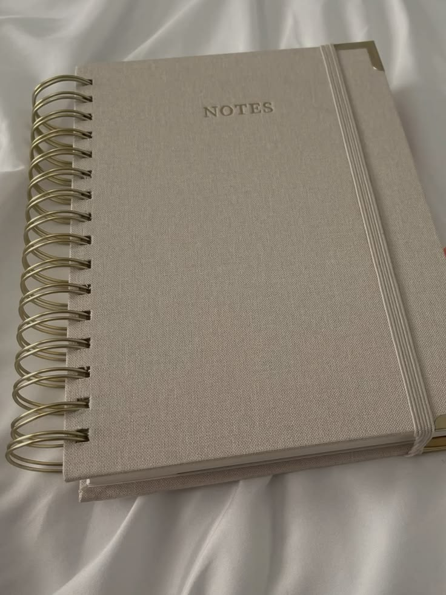
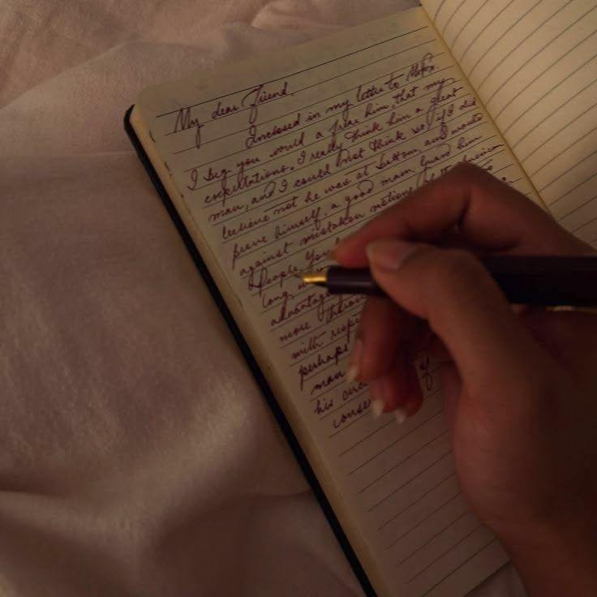

08 OUTUBRO 2026
Porque escrevo?
Talvez escrever seja uma das formas mais bonitas de tentar compreender aquilo que sentimos.
Ler artigo →BLOG
Um espaço para partilhar pensamentos, histórias, descobertas e pequenos pedaços do meu universo enquanto escritora.

08 OUTUBRO 2026
Talvez escrever seja uma das formas mais bonitas de tentar compreender aquilo que sentimos.
Ler artigo →.jpg)
EM BREVE
Algumas histórias começam muito antes de chegarem ao papel.
Em breve →
EM BREVE
Dos primeiros pensamentos ao mundo onde Arianna Lennovsk ganhou vida.
Em breve →